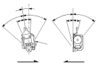
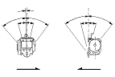

Seat Belts Inspection
|
For front seat belt retractor with seat belt tensioner,
review the SRS component locations
, and the
precautions and procedures
in the SRS section before performing repairs or service.
Retractor
|
Front:

Rear:

Rear center shoulder:

|